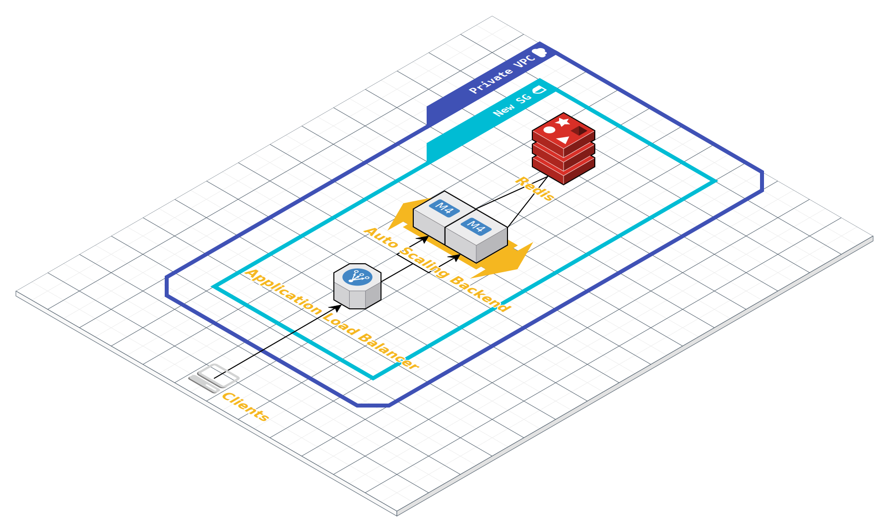

Websocket APIs
- About me:
- 🙋♂️: Enric Soler Rastrollo (@MaDDoGoS)
- ⬡.js Developer
- 📧: contact(at)enricsoler.dev
- https://www.linkedin.com/in/enricsolerrastrollo/
Traditional Websocket API
1 (at least) server with autoscaling policies
1 load balancer to connect to instances
1 db to handle connections (i.e. Redis)
Traditional example
Why serverless?

1) Decreases costs
2) Auto-scales without managing
API Gateway
What is API Gateway
API Gateway allows you to create, maintain, and secure APIs at any scale
https://aws.amazon.com/api-gateway
Features
- Easy creation of API (REST or Websokets)
- Resilient
- Versioning
- Monitoring
- Security
Implementation
Route selection => Default: $request.body.action
- $connect
- $disconnect
- $default
Example
functions:
connectHandler:
handler: handler.connectHandler
events:
- websocket: $connect
- websocket: $disconnect
functions:
messageHandler:
handler: handler.messageHandler
events:
- websocket: message
Sending messages to clients...
- Storing connection ids (Dynamo, Redis)
- Send to all
https://{api-id}.execute-api.us-east-1.amazonaws.com/{stage}/@connections/{connection_id}